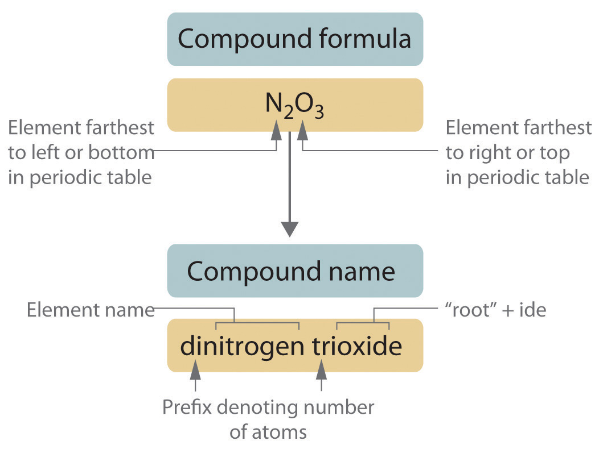
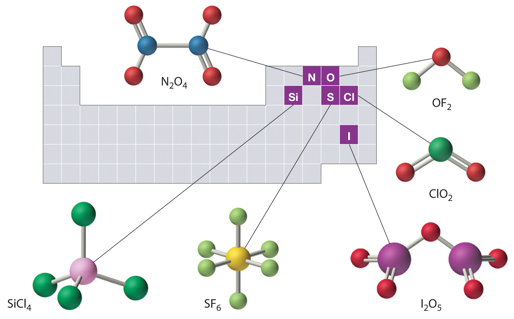
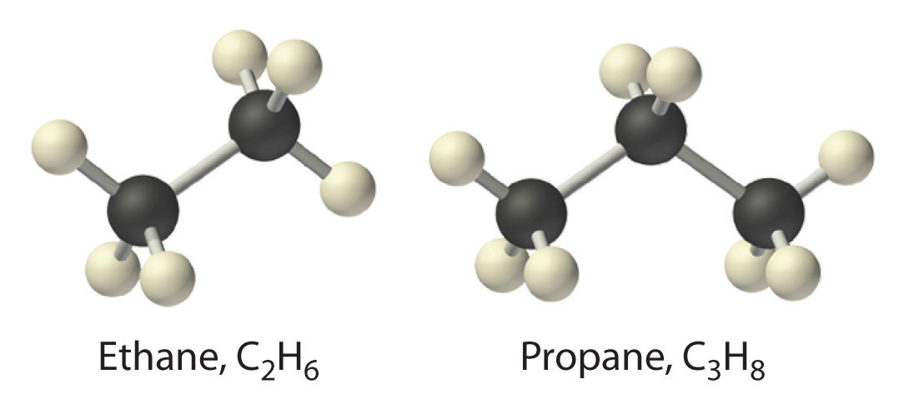
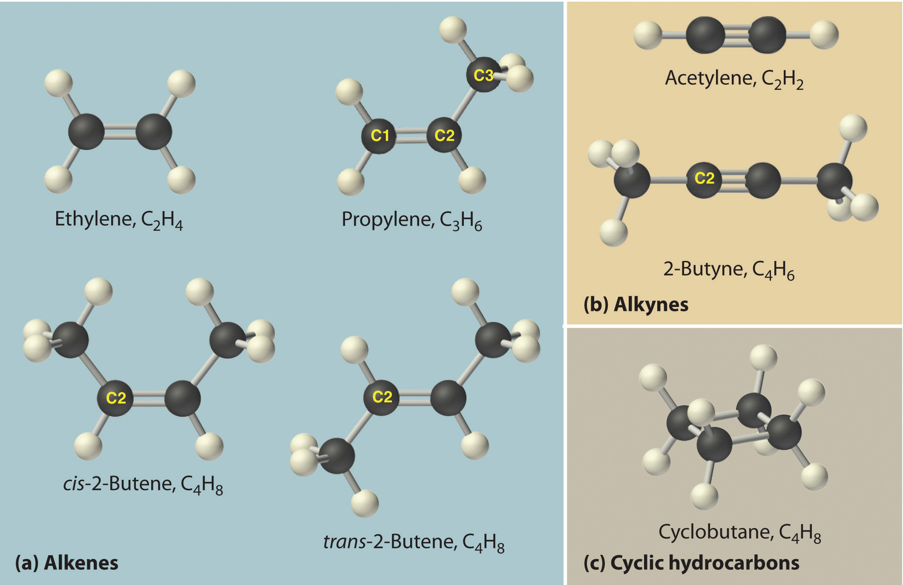
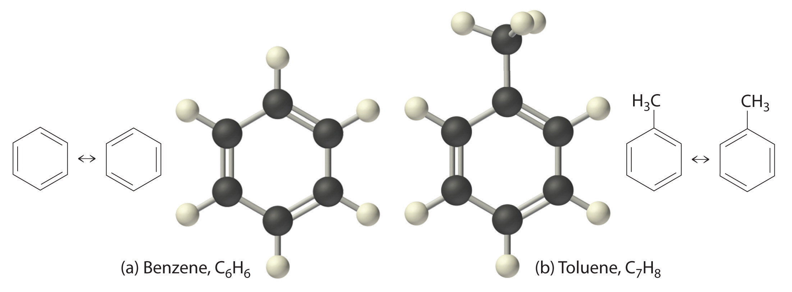
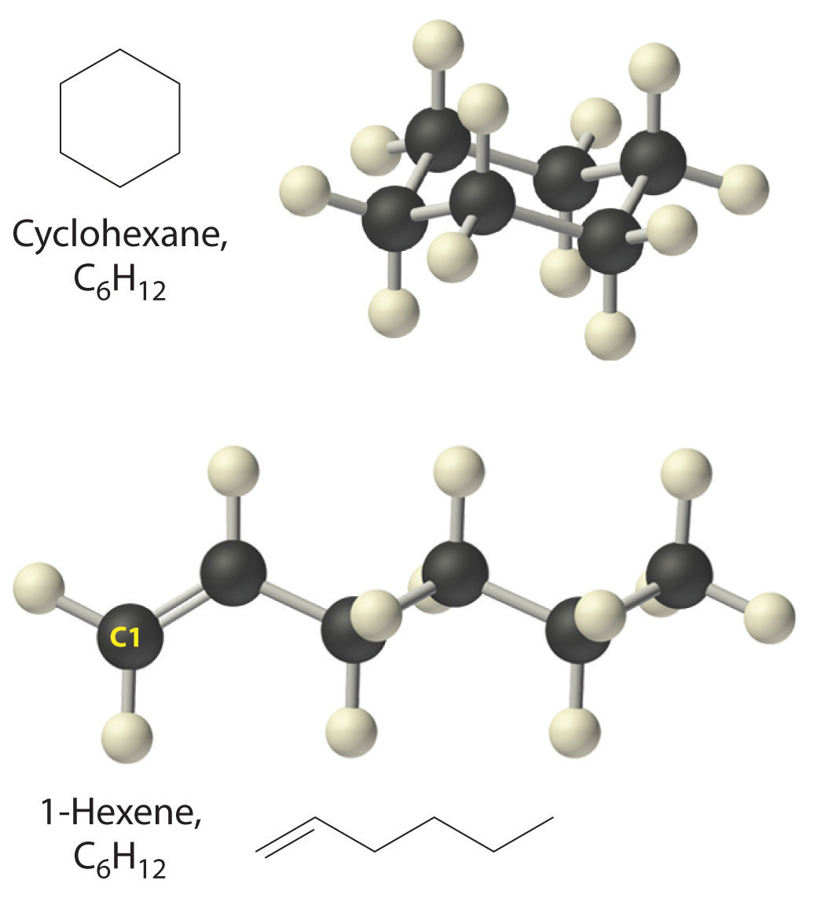

As with ionic compounds, the system that chemists have devised for naming covalent compounds enables us to write the molecular formula from the name and vice versa. In this and the following section, we describe the rules for naming simple covalent compounds. We begin with inorganic compounds and then turn to simple organic compounds that contain only carbon and hydrogen.
Binary covalent compounds—that is, covalent compounds that contain only two elements—are named using a procedure similar to that used to name simple ionic compounds, but prefixes are added as needed to indicate the number of atoms of each kind. The procedure, diagrammed in Figure 2.13 "Naming a Covalent Inorganic Compound", uses the following steps:
Figure 2.13 Naming a Covalent Inorganic Compound
Place the elements in their proper order.
Identify the number of each type of atom present.
Prefixes derived from Greek stems are used to indicate the number of each type of atom in the formula unit (Table 2.6 "Prefixes for Indicating the Number of Atoms in Chemical Names"). The prefix mono- (“one”) is used only when absolutely necessary to avoid confusion, just as we omit the subscript 1 when writing molecular formulas.
To demonstrate steps 1 and 2a, we name HCl as hydrogen chloride (because hydrogen is to the left of chlorine in the periodic table) and PCl5 as phosphorus pentachloride. The order of the elements in the name of BrF3, bromine trifluoride, is determined by the fact that bromine lies below fluorine in group 17.
Table 2.6 Prefixes for Indicating the Number of Atoms in Chemical Names
| Prefix | Number |
|---|---|
| mono- | 1 |
| di- | 2 |
| tri- | 3 |
| tetra- | 4 |
| penta- | 5 |
| hexa- | 6 |
| hepta- | 7 |
| octa- | 8 |
| nona- | 9 |
| deca- | 10 |
| undeca- | 11 |
| dodeca- | 12 |
Write the name of the compound.
Start with the element at the far left in the periodic table and work to the right. If two or more elements are in the same group, start with the bottom element and work up.
Write the name of each binary covalent compound.
Given: molecular formula
Asked for: name of compound
Strategy:
A List the elements in order according to their positions in the periodic table. Identify the number of each type of atom in the chemical formula and then use Table 2.6 "Prefixes for Indicating the Number of Atoms in Chemical Names" to determine the prefixes needed.
B If the compound contains oxygen, follow step 3a. If not, decide whether to use the common name or the systematic name.
Solution:
Exercise
Write the name of each binary covalent compound.
Answer:
Write the formula for each binary covalent compound.
Given: name of compound
Asked for: formula
Strategy:
List the elements in the same order as in the formula, use Table 2.6 "Prefixes for Indicating the Number of Atoms in Chemical Names" to identify the number of each type of atom present, and then indicate this quantity as a subscript to the right of that element when writing the formula.
Solution:
Exercise
Write the formula for each binary covalent compound.
Answer:
The structures of some of the compounds in Example 8 and Example 9 are shown in Figure 2.14 "The Structures of Some Covalent Inorganic Compounds and the Locations of the “Central Atoms” in the Periodic Table", along with the location of the “central atom” of each compound in the periodic table. It may seem that the compositions and structures of such compounds are entirely random, but this is not true. After you have mastered the material in Chapter 7 "The Periodic Table and Periodic Trends" and Chapter 8 "Ionic versus Covalent Bonding", you will be able to predict the compositions and structures of compounds of this type with a high degree of accuracy.
Figure 2.14 The Structures of Some Covalent Inorganic Compounds and the Locations of the “Central Atoms” in the Periodic Table
The compositions and structures of covalent inorganic compounds are not random. As you will learn in Chapter 7 "The Periodic Table and Periodic Trends" and Chapter 8 "Ionic versus Covalent Bonding", they can be predicted from the locations of the component atoms in the periodic table.
Approximately one-third of the compounds produced industrially are organic compounds. All living organisms are composed of organic compounds, as is most of the food you consume, the medicines you take, the fibers in the clothes you wear, and the plastics in the materials you use. Section 2.1 "Chemical Compounds" introduced two organic compounds: methane (CH4) and methanol (CH3OH). These and other organic compounds appear frequently in discussions and examples throughout this text.
The detection of organic compounds is useful in many fields. In one recently developed application, scientists have devised a new method called “material degradomics” to make it possible to monitor the degradation of old books and historical documents. As paper ages, it produces a familiar “old book smell” from the release of organic compounds in gaseous form. The composition of the gas depends on the original type of paper used, a book’s binding, and the applied media. By analyzing these organic gases and isolating the individual components, preservationists are better able to determine the condition of an object and those books and documents most in need of immediate protection.
The simplest class of organic compounds is the hydrocarbonsThe simplest class of organic molecules, consisting of only carbon and hydrogen., which consist entirely of carbon and hydrogen. Petroleum and natural gas are complex, naturally occurring mixtures of many different hydrocarbons that furnish raw materials for the chemical industry. The four major classes of hydrocarbons are the alkanesA saturated hydrocarbon with only carbon–hydrogen and carbon–carbon single bonds., which contain only carbon–hydrogen and carbon–carbon single bonds; the alkenesAn unsaturated hydrocarbon with at least one carbon–carbon double bond., which contain at least one carbon–carbon double bond; the alkynesAn unsaturated hydrocarbon with at least one carbon–carbon triple bond., which contain at least one carbon–carbon triple bond; and the aromatic hydrocarbonsAn unsaturated hydrocarbon consisting of a ring of six carbon atoms with alternating single and double bonds., which usually contain rings of six carbon atoms that can be drawn with alternating single and double bonds. Alkanes are also called saturated hydrocarbons, whereas hydrocarbons that contain multiple bonds (alkenes, alkynes, and aromatics) are unsaturated.
The simplest alkane is methane (CH4), a colorless, odorless gas that is the major component of natural gas. In larger alkanes whose carbon atoms are joined in an unbranched chain (straight-chain alkanes), each carbon atom is bonded to at most two other carbon atoms. The structures of two simple alkanes are shown in Figure 2.15 "Straight-Chain Alkanes with Two and Three Carbon Atoms", and the names and condensed structural formulas for the first 10 straight-chain alkanes are in Table 2.7 "The First 10 Straight-Chain Alkanes". The names of all alkanes end in -ane, and their boiling points increase as the number of carbon atoms increases.
Figure 2.15 Straight-Chain Alkanes with Two and Three Carbon Atoms
Table 2.7 The First 10 Straight-Chain Alkanes
| Name | Number of Carbon Atoms | Molecular Formula | Condensed Structural Formula | Boiling Point (°C) | Uses |
|---|---|---|---|---|---|
| methane | 1 | CH4 | CH4 | −162 | natural gas constituent |
| ethane | 2 | C2H6 | CH3CH3 | −89 | natural gas constituent |
| propane | 3 | C3H8 | CH3CH2CH3 | −42 | bottled gas |
| butane | 4 | C4H10 | CH3CH2CH2CH3 or CH3(CH2)2CH3 | 0 | lighters, bottled gas |
| pentane | 5 | C5H12 | CH3(CH2)3CH3 | 36 | solvent, gasoline |
| hexane | 6 | C6H14 | CH3(CH2)4CH3 | 69 | solvent, gasoline |
| heptane | 7 | C7H16 | CH3(CH2)5CH3 | 98 | solvent, gasoline |
| octane | 8 | C8H18 | CH3(CH2)6CH3 | 126 | gasoline |
| nonane | 9 | C9H20 | CH3(CH2)7CH3 | 151 | gasoline |
| decane | 10 | C10H22 | CH3(CH2)8CH3 | 174 | kerosene |
Alkanes with four or more carbon atoms can have more than one arrangement of atoms. The carbon atoms can form a single unbranched chain, or the primary chain of carbon atoms can have one or more shorter chains that form branches. For example, butane (C4H10) has two possible structures. Normal butane (usually called n-butane) is CH3CH2CH2CH3, in which the carbon atoms form a single unbranched chain. In contrast, the condensed structural formula for isobutane is (CH3)2CHCH3, in which the primary chain of three carbon atoms has a one-carbon chain branching at the central carbon. Three-dimensional representations of both structures are as follows:
The systematic names for branched hydrocarbons use the lowest possible number to indicate the position of the branch along the longest straight carbon chain in the structure. Thus the systematic name for isobutane is 2-methylpropane, which indicates that a methyl group (a branch consisting of –CH3) is attached to the second carbon of a propane molecule. Similarly, you will learn in Section 2.6 "Industrially Important Chemicals" that one of the major components of gasoline is commonly called isooctane; its structure is as follows:
As you can see, the compound has a chain of five carbon atoms, so it is a derivative of pentane. There are two methyl group branches at one carbon atom and one methyl group at another. Using the lowest possible numbers for the branches gives 2,2,4-trimethylpentane for the systematic name of this compound.
The simplest alkenes are ethylene, C2H4 or CH2=CH2, and propylene, C3H6 or CH3CH=CH2 (part (a) in Figure 2.16 "Some Simple (a) Alkenes, (b) Alkynes, and (c) Cyclic Hydrocarbons"). The names of alkenes that have more than three carbon atoms use the same stems as the names of the alkanes (Table 2.7 "The First 10 Straight-Chain Alkanes") but end in -ene instead of -ane.
Once again, more than one structure is possible for alkenes with four or more carbon atoms. For example, an alkene with four carbon atoms has three possible structures. One is CH2=CHCH2CH3 (1-butene), which has the double bond between the first and second carbon atoms in the chain. The other two structures have the double bond between the second and third carbon atoms and are forms of CH3CH=CHCH3 (2-butene). All four carbon atoms in 2-butene lie in the same plane, so there are two possible structures (part (a) in Figure 2.16 "Some Simple (a) Alkenes, (b) Alkynes, and (c) Cyclic Hydrocarbons"). If the two methyl groups are on the same side of the double bond, the compound is cis-2-butene (from the Latin cis, meaning “on the same side”). If the two methyl groups are on opposite sides of the double bond, the compound is trans-2-butene (from the Latin trans, meaning “across”). These are distinctly different molecules: cis-2-butene melts at −138.9°C, whereas trans-2-butene melts at −105.5°C.
Figure 2.16 Some Simple (a) Alkenes, (b) Alkynes, and (c) Cyclic Hydrocarbons
The positions of the carbon atoms in the chain are indicated by C1 or C2.
Just as a number indicates the positions of branches in an alkane, the number in the name of an alkene specifies the position of the first carbon atom of the double bond. The name is based on the lowest possible number starting from either end of the carbon chain, so CH3CH2CH=CH2 is called 1-butene, not 3-butene. Note that CH2=CHCH2CH3 and CH3CH2CH=CH2 are different ways of writing the same molecule (1-butene) in two different orientations.
The name of a compound does not depend on its orientation. As illustrated for 1-butene, both condensed structural formulas and molecular models show different orientations of the same molecule. Don’t let orientation fool you; you must be able to recognize the same structure no matter what its orientation.
The positions of groups or multiple bonds are always indicated by the lowest number possible.
The simplest alkyne is acetylene, C2H2 or HC≡CH (part (b) in Figure 2.16 "Some Simple (a) Alkenes, (b) Alkynes, and (c) Cyclic Hydrocarbons"). Because a mixture of acetylene and oxygen burns with a flame that is hot enough (>3000°C) to cut metals such as hardened steel, acetylene is widely used in cutting and welding torches. The names of other alkynes are similar to those of the corresponding alkanes but end in -yne. For example, HC≡CCH3 is propyne, and CH3C≡CCH3 is 2-butyne because the multiple bond begins on the second carbon atom.
The number of bonds between carbon atoms in a hydrocarbon is indicated in the suffix:
In a cyclic hydrocarbonA hydrocarbon in which the ends of the carbon chain are connected to form a ring of covalently bonded carbon atoms., the ends of a hydrocarbon chain are connected to form a ring of covalently bonded carbon atoms. Cyclic hydrocarbons are named by attaching the prefix cyclo- to the name of the alkane, the alkene, or the alkyne. The simplest cyclic alkanes are cyclopropane (C3H6) a flammable gas that is also a powerful anesthetic, and cyclobutane (C4H8) (part (c) in Figure 2.16 "Some Simple (a) Alkenes, (b) Alkynes, and (c) Cyclic Hydrocarbons"). The most common way to draw the structures of cyclic alkanes is to sketch a polygon with the same number of vertices as there are carbon atoms in the ring; each vertex represents a CH2 unit. The structures of the cycloalkanes that contain three to six carbon atoms are shown schematically in Figure 2.17 "The Simple Cycloalkanes".
Figure 2.17 The Simple Cycloalkanes

Alkanes, alkenes, alkynes, and cyclic hydrocarbons are generally called aliphatic hydrocarbonsAlkanes, alkenes, alkynes, and cyclic hydrocarbons (hydrocarbons that are not aromatic).. The name comes from the Greek aleiphar, meaning “oil,” because the first examples were extracted from animal fats. In contrast, the first examples of aromatic hydrocarbons, also called arenes, were obtained by the distillation and degradation of highly scented (thus aromatic) resins from tropical trees.
The simplest aromatic hydrocarbon is benzene (C6H6), which was first obtained from a coal distillate. The word aromatic now refers to benzene and structurally similar compounds. As shown in part (a) in Figure 2.18 "Two Aromatic Hydrocarbons: (a) Benzene and (b) Toluene", it is possible to draw the structure of benzene in two different but equivalent ways, depending on which carbon atoms are connected by double bonds or single bonds. Toluene is similar to benzene, except that one hydrogen atom is replaced by a –CH3 group; it has the formula C7H8 (part (b) in Figure 2.18 "Two Aromatic Hydrocarbons: (a) Benzene and (b) Toluene"). As you will soon learn, the chemical behavior of aromatic compounds differs from the behavior of aliphatic compounds. Benzene and toluene are found in gasoline, and benzene is the starting material for preparing substances as diverse as aspirin and nylon.
Figure 2.18 Two Aromatic Hydrocarbons: (a) Benzene and (b) Toluene
Figure 2.19 "Two Hydrocarbons with the Molecular Formula C" illustrates two of the molecular structures possible for hydrocarbons that have six carbon atoms. As you can see, compounds with the same molecular formula can have very different structures.
Figure 2.19 Two Hydrocarbons with the Molecular Formula C6H12
Write the condensed structural formula for each hydrocarbon.
Given: name of hydrocarbon
Asked for: condensed structural formula
Strategy:
A Use the prefix to determine the number of carbon atoms in the molecule and whether it is cyclic. From the suffix, determine whether multiple bonds are present.
B Identify the position of any multiple bonds from the number(s) in the name and then write the condensed structural formula.
Solution:
A The prefix pent- tells us that this hydrocarbon has five carbon atoms, and the suffix -ene indicates that it is an alkene, with a carbon–carbon double bond. B The 2- tells us that the double bond begins on the second carbon of the five-carbon atom chain. The condensed structural formula of the compound is therefore CH3CH=CHCH2CH3.
A The prefix but- tells us that the compound has a chain of four carbon atoms, and the suffix -yne indicates that it has a carbon–carbon triple bond. B The 2- tells us that the triple bond begins on the second carbon of the four-carbon atom chain. So the condensed structural formula for the compound is CH3C≡CCH3.
A The prefix cyclo- tells us that this hydrocarbon has a ring structure, and oct- indicates that it contains eight carbon atoms, which we can draw as
The suffix -ene tells us that the compound contains a carbon–carbon double bond, but where in the ring do we place the double bond? B Because all eight carbon atoms are identical, it doesn’t matter. We can draw the structure of cyclooctene as
Exercise
Write the condensed structural formula for each hydrocarbon.
Answer:
The general name for a group of atoms derived from an alkane is an alkyl group. The name of an alkyl group is derived from the name of the alkane by adding the suffix -yl. Thus the –CH3 fragment is a methyl group, the –CH2CH3 fragment is an ethyl group, and so forth, where the dash represents a single bond to some other atom or group. Similarly, groups of atoms derived from aromatic hydrocarbons are aryl groups, which sometimes have unexpected names. For example, the –C6H5 fragment is derived from benzene, but it is called a phenyl group. In general formulas and structures, alkyl and aryl groups are often abbreviated as RThe abbreviation used for alkyl groups and aryl groups in general formulas and structures..
Structures of alkyl and aryl groups. The methyl group is an example of an alkyl group, and the phenyl group is an example of an aryl group.
Replacing one or more hydrogen atoms of a hydrocarbon with an –OH group gives an alcoholA class of organic compounds obtained by replacing one or more of the hydrogen atoms of a hydrocarbon with an −OH group., represented as ROH. The simplest alcohol (CH3OH) is called either methanol (its systematic name) or methyl alcohol (its common name) (see Figure 2.4 "Different Ways of Representing the Structure of a Molecule"). Methanol is the antifreeze in automobile windshield washer fluids, and it is also used as an efficient fuel for racing cars, most notably in the Indianapolis 500. Ethanol (or ethyl alcohol, CH3CH2OH) is familiar as the alcohol in fermented or distilled beverages, such as beer, wine, and whiskey; it is also used as a gasoline additive (Section 2.6 "Industrially Important Chemicals"). The simplest alcohol derived from an aromatic hydrocarbon is C6H5OH, phenol (shortened from phenyl alcohol), a potent disinfectant used in some sore throat medications and mouthwashes.
Ethanol, which is easy to obtain from fermentation processes, has successfully been used as an alternative fuel for several decades. Although it is a “green” fuel when derived from plants, it is an imperfect substitute for fossil fuels because it is less efficient than gasoline. Moreover, because ethanol absorbs water from the atmosphere, it can corrode an engine’s seals. Thus other types of processes are being developed that use bacteria to create more complex alcohols, such as octanol, that are more energy efficient and that have a lower tendency to absorb water. As scientists attempt to reduce mankind’s dependence on fossil fuels, the development of these so-called biofuels is a particularly active area of research.
Covalent inorganic compounds are named by a procedure similar to that used for ionic compounds, using prefixes to indicate the numbers of atoms in the molecular formula. The simplest organic compounds are the hydrocarbons, which contain only carbon and hydrogen. Alkanes contain only carbon–hydrogen and carbon–carbon single bonds, alkenes contain at least one carbon–carbon double bond, and alkynes contain one or more carbon–carbon triple bonds. Hydrocarbons can also be cyclic, with the ends of the chain connected to form a ring. Collectively, alkanes, alkenes, and alkynes are called aliphatic hydrocarbons. Aromatic hydrocarbons, or arenes, are another important class of hydrocarbons that contain rings of carbon atoms related to the structure of benzene (C6H6). A derivative of an alkane or an arene from which one hydrogen atom has been removed is called an alkyl group or an aryl group, respectively. Alcohols are another common class of organic compound, which contain an –OH group covalently bonded to either an alkyl group or an aryl group (often abbreviated R).
Benzene (C6H6) is an organic compound, and KCl is an ionic compound. The sum of the masses of the atoms in each empirical formula is approximately the same. How would you expect the two to compare with regard to each of the following? What species are present in benzene vapor?
Can an inorganic compound be classified as a hydrocarbon? Why or why not?
Is the compound NaHCO3 a hydrocarbon? Why or why not?
Name each compound.
Name each compound.
For each structural formula, write the condensed formula and the name of the compound.
For each structural formula, write the condensed formula and the name of the compound.
Would you expect PCl3 to be an ionic compound or a covalent compound? Explain your reasoning.
What distinguishes an aromatic hydrocarbon from an aliphatic hydrocarbon?
The following general formulas represent specific classes of hydrocarbons. Refer to Table 2.7 "The First 10 Straight-Chain Alkanes" and Table 2.8 "Some Common Acids That Do Not Contain Oxygen" and Figure 2.16 "Some Simple (a) Alkenes, (b) Alkynes, and (c) Cyclic Hydrocarbons" and identify the classes.
Using R to represent an alkyl or aryl group, show the general structure of an
Write the formula for each compound.
Write the formula for each compound.
Write the formula for each compound.
Name each compound.
Name each compound.
Draw the structure of each compound.
Draw the structure of each compound.